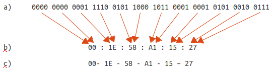
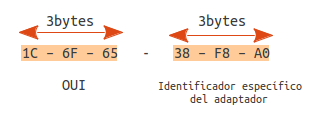
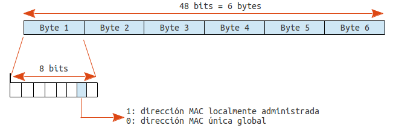

Direccionamiento físico. Tipos de direcciones MAC¶
Concepto de dirección física¶
La dirección física en la capa de enlace de datos es el identificador que permite distinguir de manera única a cada dispositivo dentro de una misma red física. Este tipo de dirección depende directamente de la tecnología de transmisión utilizada, por lo que no existe un único formato universal para todas las redes de capa de enlace.
La dirección física depende de la tecnología¶
Cada tecnología de red define su propio mecanismo para identificar dispositivos dentro del medio de transmisión. Por eso, aunque el ejemplo más conocido es la dirección MAC, no todas las redes usan este tipo de dirección.
En las redes Ethernet, tanto cableadas como inalámbricas (Wi-Fi), que son las utilizadas normalmente en las redes locales, la capa de enlace utiliza direcciones MAC (Media Access Control). Estas direcciones:
- Tienen 48 bits (o 64 bits en versiones más nuevas como EUI-64).
- Son únicas para cada interfaz de red.
- Se utilizan para encaminamiento de tramas dentro de la red local.
Las direcciones MAC son, por tanto, el tipo de dirección física propio de la tecnología Ethernet.
Otras tecnologías usan otros tipos de direcciones físicas¶
No todas las redes de capa de enlace usan MAC. Otras tecnologías —especialmente las que no son Ethernet— pueden emplear formatos diferentes, tanto en tamaño como en estructura. Por ejemplo:
- Redes celulares (4G/5G) Usan identificadores como IMSI, TMSI, o GUTI, que actúan como direcciones dentro de la red del operador, pero no son MAC.
- Redes Bluetooth Utilizan direcciones BD_ADDR, también de 48 bits, pero con formato y propósito distinto a la MAC de Ethernet.
- Redes Token Ring o FDDI (tecnologías históricas) Utilizaban direcciones físicas similares a las MAC, pero adaptadas a su arquitectura.
- Enlaces punto a punto (PPP) No necesitan dirección física porque solo hay dos extremos; no hay necesidad de identificarlos dentro del enlace.
- Tecnologías de capa de enlace en redes industriales (p. ej., CAN, Profibus) Tienen sus propios esquemas de direccionamiento físico diseñados para el medio y la velocidad de transmisión.
Tipos de direcciones MAC Ethernet¶
Como hemos visto, las direcciones MAC son de 48 bits. Los tipos de direcciones MAC en el estandar Ethernet son:
Dirección MAC unicast única global¶
Una dirección MAC unicast única global es una dirección física de la capa de enlace que cumple tres propiedades:
- MAC → es una dirección de capa 2 usada en tecnologías como Ethernet o Wi-Fi.
- Unicast → identifica a un solo dispositivo, no a un grupo (multicast) ni a todos (broadcast).
- Única global → está asignada de forma que sea única en todo el mundo, gracias a que el fabricante la obtiene de un bloque registrado.
Consiste en un número binario de 48 bits que normalmente se representa de forma hexadecimal, agrupando los dígitos de dos en dos y separándolos mediante dos puntos (:) o un guión (-).
En la siguiente imagen podemos ver distintas formas de representar la misma dirección MAC: a) binario, b) hexadecimal separado por “:” c) hexadecimal separado por “-”

Cada adaptador de red recibe una dirección MAC de fabrica que es única en el mundo. De esta forma se puede asegurar que, si se utilizan las direcciones MAC de fábrica, nunca coincidirán dos dispositivos con una misma dirección MAC en una misma red local.
La entidad encargada de controlar que las direcciones MAC de fabrica no se repitan es el IEEE. Para llevar a cabo este control divide la dirección MAC en dos partes:
- Los 24 primeros bits reciben el nombre de identificador único de la organización (OUI, organizationally unique identifier) y sirven para identificar al fabricante del adaptador. El IEEE es quien asigna los valores del OUI a cada fabricante.
- Los últimos 24 bits los asigna el fabricante. teniendo en cuenta la obligación de que sean distintos para cada adaptador.

Si queremos localizar el fabricante de una tarjeta de red a partir de su dirección MAC lo podemos hacer en la siguiente dirección en la que se recopilan.
El principal uso de las direcciones MAC es indicar en cada trama quiénes son su remitente y su destinatario de entre los diferentes dispositivos que están compartiendo el medio.
Para diferenciar una dirección unicast única global del resto de tipos de direcciones MAC hemos de tener en cuenta que de los 48 bits que la componen:
- El octavo bit vale 0 - indica que es unicast
- El séptimo bit vale 0 - indica que es única global.
Direcciones MAC especiales¶
Dirección MAC de difusión o de broadcast¶
Es la que tiene todos los bits a 1, en notación hexadecimal:
Cuando se utiliza esta dirección como destino de una trama, todos los dispositivos del medio compartido la aceptan, independientemente de cuál sea su dirección MAC configurada como propia.
Este tipo de direcciones son útiles para procedimientos en los que se implica a todas las máquinas, como:
- En protocolos de descubrimiento usados por servidores, servicios o hosts (se envía en una trama la pregunta ¿quién es X? y X responde al remitente de la trama informándole con su dirección MAC)
- En aplicaciones de difusión simultánea de datos (p. ej. para enviar un fichero a todos los dispositivos a la vez, especialmente si es de gran tamaño, como es el caso de las clonaciones de PC), etc.
Direcciones MAC de multidifusión o de multicast¶
su funcionamiento es similar al de la dirección MAC de difusión, ya que la trama puede ser aceptada por varios dispositivos a la vez.
Este tipo de direccionamiento es útil cuando se quiere difundir datos selectivamente a algunos dispositivos de la red, por ejemplo cuando se quieren clonar algunas máquinas (pero no todas) a través de la red. O en aplicaciones de gestión de la red para informar a varios dispositivos a la vez de algún cambio en la red.
Las direcciones MAC reservadas para este propósito son las que tienen el octavo bit 1.
Direcciones MAC localmente administradas¶
Cuando queremos cambiar la dirección MAC de nuestro adaptador por otra arbitraria es importante que esta no coincida con la de ningún otro adaptador. Por ello se han reservado para uso local aquellas direcciones MAC unicast (octabo bit a 1) que tienen el septimo bit a 1.

Reglas a seguir para determinar el tipo de dirección MAC¶
Si queremos determinar de que tipo es una dirección MAC debemos seguir estos pasos:
- Si la dirección MAC tiene todos sus bits a 1 (FF:FF:FF:FF:FF:FF en hexadecimal) la dirección es de broadcast o difusión
- Si la dirección MAC tiene su octavo bit a 1 la dirección es de multicast o multidifusión.
- Si la dirección MAC tiene su octavo bit a 0 la dirección es unicast. Para saber de que tipo miramos su séptimo bit:
- Si el séptimo bit vale 0 la dirección es unicast única global.
- Si el séptimo bit vale 1 la dirección es unicast localmente administrada.
Modo promiscuo¶
Cuando un adaptador de red se configura en modo promiscuo acepta todas las tramas que recibe, vayan o no destinadas a él. Este modo de configuración es especialmente útil si queremos analizar todo el tráfico que pasa por un determinado punto de la red.